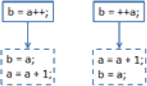

首页 > 编程笔记
Java自增自减运算符（++、--）
在 Java 种，++ 叫做自增运算符，-- 叫做自减运算符，它们的作用是使变量的值增 1 或减 1。
以一个 int 型变量 a 为例，自增、自减运算符的写法如下：
以“++”为例，自增的操作顺序如下图所示。
【实例】先对值为 1 的 int 型变量做自增运算，再对其做自减运算，代码如下。
【实例】 先对值为 1的 int 型变量做“a++”运算，再对其做“++a”运算，代码如下：
以一个 int 型变量 a 为例，自增、自减运算符的写法如下：
a++; // 先输出a的原值，后做+1运算 ++a; // 先做 +1 运算，再输出 a 计算之后的值 a--; // 先输出 a 的原值，后做 -1 运算 --a; // 先做 -1 运算，再输出 a 计算之后的值不难发现，“++”或者“--”既可以放在变量之前，又可以放在变量之后。需要注意的是，“++”或者“--”的位置不同，自增或者自减的操作顺序也会不同。
以“++”为例，自增的操作顺序如下图所示。

图 1 自增的操作顺序
图 1 自增的操作顺序
【实例】先对值为 1 的 int 型变量做自增运算，再对其做自减运算，代码如下。
int number = 1;
System.out.println("number = " + number);
number++;
System.out.println("number++ = " + number);
number--;
System.out.println("number-- = " + number);
上述代码的运行结果如下。
number = 1
number++ = 2
number-- = 1
【实例】 先对值为 1的 int 型变量做“a++”运算，再对其做“++a”运算，代码如下：
int a = 1;
int b = a++; // 先赋值，然后 a 才自增
System.out.println("a = " + a);
System.out.println("a++后，a = " + a + "，b = " + b);
a = 1; // 重置a的值
b = ++a; // a 先自增 1，然后赋值给 b
System.out.println("++a后，a = " + a + "，b = " + b);
上述代码的运行结果如下。
a = 1
a++后，a = 2，b = 1
++a后，a = 3，b = 3
关注公众号「站长严长生」，在手机上阅读所有教程，随时随地都能学习。内含一款搜索神器，免费下载全网书籍和视频。

微信扫码关注公众号